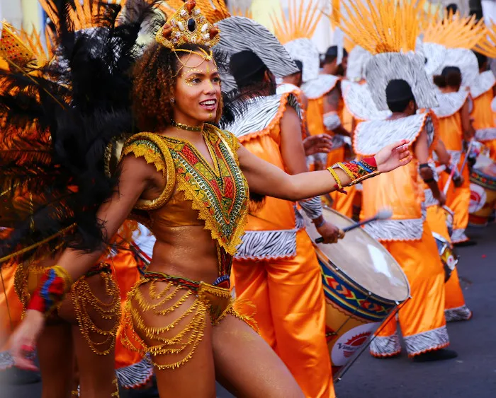

A cultura de Cabo Verde tem forte influência europeia e africana. Os ritmos musicais locais próprios, como o morna, o funaná e o batuque, são muito admirados pela população. Há ainda muitos festejos locais, como festas religiosas e práticas de batucada.
O Carnaval de Mindelo é considerada a principal manifestação cultural de Cabo Verde. Já na culinária destaca-se o consumo de peixes e mariscos, além de milho e arroz. O pastel é um prato típico do país. Em relação aos esportes, destacam-se o futebol, basquetebol e handebol.
